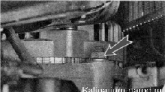
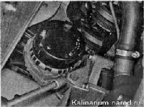
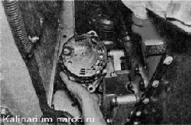
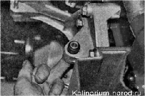
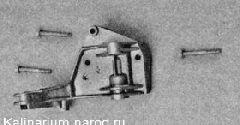

Снятие и установка генератораДля выполнения работы потребуется смотровая канава или эстакада. Снятие Перед снятием ремня привода генератора стрелкой пометьте направление его вращения. 1. Снимаем ремень привода генератора. 2. Снимаем наконечники проводов с контактного болта. 3. Отсоединяем провода от генератора. 4. Торцовым ключом на 13 мм отворачиваем гайку болта верхнего крепления генератора. 5. Торцовым ключом на 17 мм отворачиваем болт нижнего крепления генератора. 6. Извлекаем болты из кронштейна генератора и снимаем генератор.  7. Чтобы не потерять, извлекаем из кронштейна генератора гайку и втулку болта. 
8. При необходимости снимаем натяжной механизм (см. «Ремень привода генератора — замена ремня и натяжного ролика») и, отвернув три болта торцовым ключом на 13 мм, снимаем кронштейн генератора. Установка Устанавливаем генератор в обратной последовательности. После установки генератора регулируем натяжение ремня его привода. |